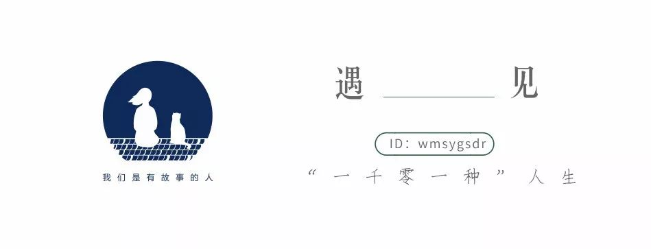
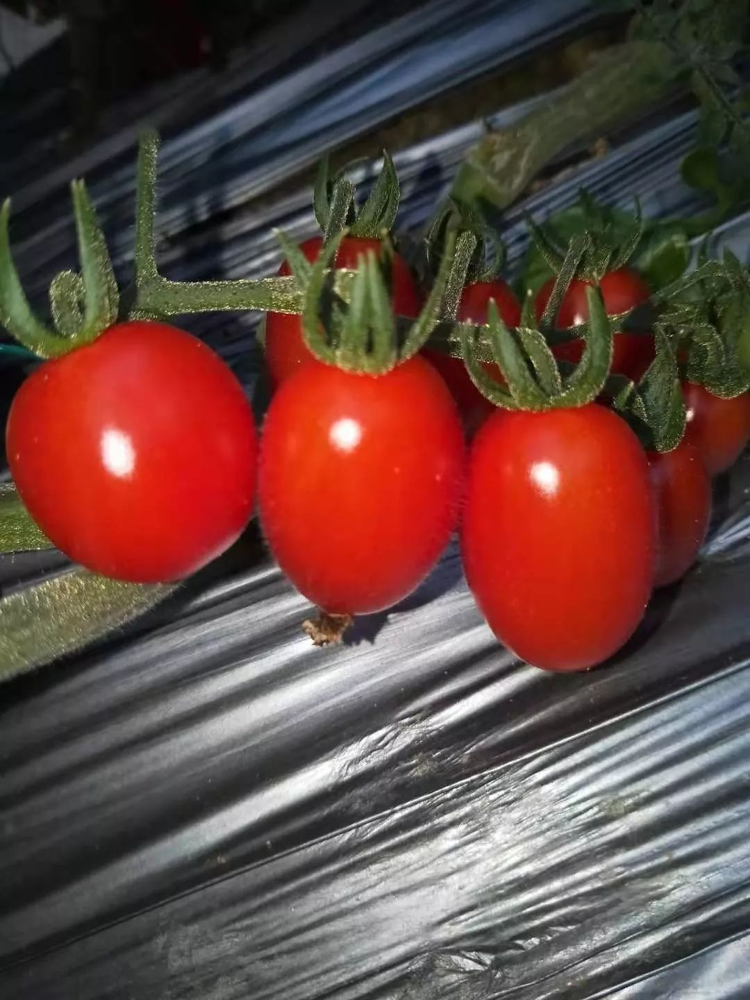

美国小城的口罩风波-陈玲-财新博客-新世纪的常识传播者-财新网
原文链接 备份链接 于这座小城，我只是一个过客。 身为油腻的中年妇女，重新捡起英语的惨烈真是一言难尽。走过考试的壮烈，而今硬着头皮翻译自己的著作和论文。好在就此让娃提炼出：只要坚持，就一定能够把事情做成。他们时常用这句话来解释各种事情，也 …

“

- 疫 情 之 下 -
其实我内心很挣扎，有钱不挣这是傻子行径。但我明白这是非常时期，作为普通人，我们既然帮不上忙，那就选择不添乱吧！
”
1
1月24日是大年三十，终于靠到了年根儿，孩子们的作业也已经完成了大半，于是我们收拾收拾东西回了老家。
一路风尘地到了家，我们却没有过多停留，只和公婆打了个招呼， 一家四口就兴致勃勃地去了大棚。
我们这边盛产圣女果，也就是一种小西红柿。因为水土的原因，这里的圣女果口感特别好，随着市场慢慢打开，圣女果的价格也水涨船高，用来种植圣女果的大棚更是如雨后春笋般拔地而起。
老公的姐姐看好了这个商机，2019年秋天，在老家一次性投资新建了二十个棚用于出租，老公的哥哥资金不足，就和姐姐商量着合伙种了一个棚。眼下正是圣女果上市的时间，听说哥哥的棚里也有熟的，所以我们忍不住就想过来看看。
“现在多少钱一斤了？”老公问哥哥。
“往外批发的话七块多一斤了。”哥哥说，“现在刚下来，过完年价格还得高！”这价格真喜人啊！按照这几年的行情，收入指定又错不了。
我们边摘边吃，却听这哥俩没说几句，就说到了疫情上面来。
新冠肺炎疫情正赶上新年，并且很短的时间内就引起了大家的关注，以至于今年在街上人们见了面，都会不约而同地讨论这个话题。
我们看完大棚圣女果回了家，也没能停止对这件事的关注，以至于春节晚会都没心思看。好好的除夕夜，吃完饺子依然有些不对味。
初一早上，全村的气氛都好像凝固了，往年的这个时候，街上人来人往，到处都是一拨一拨出去拜年的小队伍，今年外面却连个孩子都看不到，偶尔有特别重视礼数的成年人出门拜年，也不过犹疑着走一两家，就识趣地回家呆着了。
我就在这样一个安静的春节里，在炕上躺着玩了一天的手机。

2
初二早上，我还没睡醒，门就“砰”的一声被推开了。婆婆火急火燎地告诉我，说马上要封村，挖掘机已经奔着村南的桥去了，很快就会挖土把桥堵上，问我城里是否给猫留了足够的吃的喝的。
我一骨碌爬起来，扯上老公就开车出了村，到了村口，挖掘机果然已经挖了一些土。为了防止年后出不了村，还有两辆轿车已经开出了村，就停在桥的另一头。
我们险之又险地顺利出村，并一路风驰电掣地开回了小区。才到家，婆婆就又打电话，说南桥已经隔断，村北挖掘机也过去了，要回去只能从村东的小路回去。考虑到孩子还在老家，我让老公回去，自己留了下来。
我去超市囤了足够我吃半个月的食物，然后回了家。

3
自己在家的日子很简单，做完家务没什么事的时候，我就抱着猫胡思乱想。
疫情突如其来，而且不知道什么时候才能结束，从封村的举动来看，很严重。
原本过完年就要往外发的圣女果，这下恐怕都出不去了。刚建的棚啊！听说目前为止一个棚已经投进去了三十多万，所有人都在期待它能快快地产出钱来，这个时候，它却要烂在地里了吗？
我和老公时不时地通电话，询问老家那边的信息，得知情况确实和我想的一样，所有果农都在发愁。
农民赚钱难，建棚种圣女果是下了很大决心的，有的人为此还借了很多的外债，眼下却遇到这种情况，怎么办呢？
转机出现在初六，老公打电话说哥哥的棚里正在摘圣女果，还说姐姐已经帮忙联系了很多城里的客户，让我也在小区群里发发，看有没有要的。
依照老公的要求，我立马在小区群里发布了出售圣女果的信息，一盒三斤，17元。许是都在家闲着没事，所以很快有人要买，没多久，我就接了十几单。
被腰斩的价格让我有些替果农心疼，但这也比一分不挣强。
老公到了之后，我在群里发布到货信息，让他们到我家楼下来取。第一个客户来的时候，我惊觉自己居然没戴口罩！无边的尴尬让我风一样窜上楼，迅速武装好了自己。
送完了自己小区，我们开始按照要货地址挨家挨户地去送。客户住得不集中，我们对别的小区又不很熟，所以送起来特别费劲。
好不容易送完最后一单，已经是夜里九点半，老公丝毫看不出疲惫，兴冲冲地又拉着我赶到姐姐的住处，两人对着单子算起账来。
有了销路让人振奋，况且算到最后证明还是有钱赚的，这确实让人高兴。

4
我们的圣女果品质上乘，经过了昨天的体验，很多人做了回头客，有几个邻居更是在群里毫无保留地公开称赞。所以，第二天的订单又多了些。
可是奔波在赚钱的路上，我的心却越来越不踏实。
原本拥挤的道路上，车很少，所有的店铺都关着门，路上零星的行人也都戴着口罩行色匆匆。
我们被拦在绝大多数的小区外，有的只能将手穿过栏杆，把圣女果递进去；有的即便进去了，客户也都戴着口罩，非常小心，接圣女果的时候谨慎地绝不碰到我们的手。
大家都宅在家里不出门，我们却在这非常时期开着车到处跑，见形形色色的人，这怎么看都不安全啊！
我开始有意无意地劝说老公，要不送完今天就别送了吧。身强力壮的老公却不是很在意，跟我强调这是在挣钱。
开始的时候我还有些犹豫，毕竟棚里的圣女果都在等着卖呢，而且我们的圣女果这么受欢迎，根本不愁卖。但是等客户的间隙里，我不断地刷着手机，被不断冒出来的疫情信息刺激到了。
结合着现状和网上的信息，我越来越觉得不能再继续跑下去了，再这样继续跑下去，搞不好要出事的。
“今天送完就别再送了吧，”我说，“咱不能光看钱，万一沾上病毒就不划算了。”
老公却表示：“这个病国家是给免费治的吧？我在手机上好像看见了。”
“听说新冠病毒是SARS的升级版，是有很强的传染性的。”我开始斟酌词汇，锲而不舍地跟他讲道理，“它有潜伏期，携带病毒的人在没有发病的情况下就可能传染给别人，还有一种人更可怕，他携带病毒但他自己不发病，却能传染给别人……现在是过年期间，很多人从外地回来，谁带了病毒咱不知道，咱送圣女果每天接触这么多人，万一沾上咋办？如果咱沾上病毒，还到处去送圣女果，那咱就成了超级传染源了，真到了那个时候，咱就是死一万次也不够赎罪的！”
老公眨巴眨巴眼睛，好像把我的话听进去了，思考了一下，最后决定送完今天再说。
我们一户又一户地继续送着圣女果，终于天慢慢地黑下来。
又到了一个小区大门口的时候，我依例下车把圣女果给客户送过去，老公在车上等着，等我送完圣女果回到车上的时候，老公说话了：“今晚必须把车上的这些都送完，明天就不送了，咱姐姐刚刚打电话过来，说咱这儿有一个确诊的了。明天开始，咱都在家老老实实地趴着吧！”
“那圣女果怎么办？”
“它非要烂在地里，咱也没办法。”
听到这个消息我先是惊了一下，随后释然了，该来的总会来，我庆幸自己的想法是对的。
那天晚上，我们一直送到十一点，送到最后，有的客户都已经睡觉了，接电话的声音都像是在说梦话，但不管他们是什么态度，我们都坚持着送完了。

5
也许是太疲惫了，第二天早上，我一直睡到八点半，才睁开眼。
我第一时间拿起手机看疫情发展，看微信信息。我发现小区群里有好几个人艾特我，称赞圣女果好吃，还问今天有没有了；还有一个人更有意思，加我微信说想要两千斤，问有没有货，想去拉。对此，我只能是摇头苦笑。
无一例外地，我告诉他们封村了，圣女果出不来，短时间内确实是无法供应了。
其实我内心很挣扎，有钱不挣这是傻子行径。但我明白这是非常时期，作为普通人，我们既然帮不上忙，那就选择不添乱吧！
中午，老公也终于睡饱了，爬起来用手机里的计算器一通戳，然后眼睛亮晶晶地问我知不知道挣了多少钱？我摇摇头。他伸出两根手指使劲比划给我看，然后叹了一口气，那神情，有满足，也有遗憾。
要买圣女果的信息和电话，直到两三天之后才彻底消失。从那时起，我们就安安稳稳地呆在家里，吃吃喝喝，一边关注着疫情的发展，一边专心养膘。政府都说了：宅在家里，就是贡献！
好在我们这里在确诊了三例新冠肺炎后，再没发现新的病例，形势已经趋于稳定。
听说为了防止紧急情况下进出车不方便，老家村头桥上的土已经清理干净了，圣女果也有公司开始回收，价格正在稳步上升。
我们这里，一切都在往好的方向发展，希望武汉那边也能像我们这样，快些往好的方向发展吧。
武汉加油，中国加油！
-END-
- 写 作 之 星 -
//一名整天做梦、不务正业的全职妈妈，
喜欢读书，但常常在文字里弄丢自己。//
作者 | 米奥，青年作者。
题图|《爱的迫降》剧照
“我故”故事练习生培养计划，详情请戳：

About us
主编：鹿｜本期编辑：鹿
Contact us
投稿/商务合作/咨询
微信后台留言 or 邮箱：wmsygsdr@163.com
**我们是有故事的人｜华中科技大学出版社官方故事平台**
原文链接 备份链接 于这座小城，我只是一个过客。 身为油腻的中年妇女，重新捡起英语的惨烈真是一言难尽。走过考试的壮烈，而今硬着头皮翻译自己的著作和论文。好在就此让娃提炼出：只要坚持，就一定能够把事情做成。他们时常用这句话来解释各种事情，也 …
原文链接 备份链接 陈润/文 一 从2020年1月15日回武汉至今，我在武汉整整呆了24天。这是我自大学毕业以来在武汉呆得最久的一段时间，也是自去年家人搬回武汉陪伴最长的一段日子，更是我人生至今最困难悲伤的一段岁月。 一切都因新型冠状病毒 …
原文链接 备份链接 岛语 非常时期，武汉成了全国人民挂念、祈福的城市。封城后，武汉人民的真实生活是什么样？ 正和岛自1月26日起特别推出《叶青：我在武汉疫区的第N天》专栏。叶青是一位定居武汉40年的市民，也是一名学者和官员。接下来的一段时 …
原文链接 备份链接 未来楼市调控松绑预期渐浓。 记者 | 王晓珊 编辑 | 盛倩玉 小豆 “销售旺季的时候，每个人每个月也就是接待20-30批次的客户，一场直播下来，可以加到40批的客户，相当于一个半月的客户量，线上直播还是有效果。”一位 …
原文链接 备份链接 郭强/津云客户端 一次猝不及防的病毒来袭，一场争分夺秒的防疫战，一个静悄悄的城区。 夜幕降临，离天津市区80多公里的宝坻区主干道上，绚丽的彩灯依次明亮起来，只是灯光扫描之处，没有了以往的喧嚣。除部分超市和药店外，其余各 …